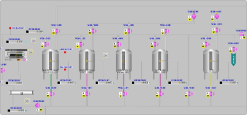
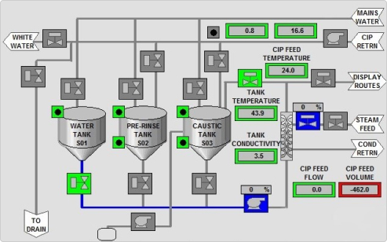

Пищевая промышленность
 Фармацевтическая промышленность
Фармацевтическая промышленность
Другие отрасли
На предприятиях пищевой промышленности периодически возникает необходимость автоматизации производственных процессов для повышения производительности, качества выпускаемой продукции и повышения экономической эффективности. Для контроля физико-химических характеристик сред используют анализаторы.
Предлагаем Вашему вниманию варианты технических решений по подключению анализаторов для контроля границы сред, концентрации промывочных жидкостей на CIPстанциях, сточных вод, контроля функционирования пастеризатора. В схеме подключения помимо анализатора предусматривается использование шкафа управления с сигнальной колонной, дисплеем и возможностью подачи сигнала на запорную арматуру.

В предлагаемой схеме могут быть использованы анализаторы следующих типов:
STS03 – датчик измерения оптической плотности жидкостей, для непрерывного контроля среды, а также определения границы изменения параметров среды, контроля процессов сепарации, фильтрации, измерения концентрации, а также контроля качества в диапазоне 0…3250 ЕВС
STS01 – датчик непрерывного измерения оптической плотности жидкостей или определения границы изменений параметров среды, для контроля процесса сепарации, а также контроля концентрации в трёх вариантах исполнения по оптической длине
-050-1-А-1 с оптической длиной 5 мм для диапазона 0…500 ЕВС
-010-1-А-1 с оптической длиной 10 мм для диапазона 0…250 ЕВС
-020-1-А-1 с оптической длиной 20 мм для диапазона 0…100 ЕВС
STS015 – анализатор рассеивания инфракрасного излучения в диапазоне 700…6000 ЕВС
SLI03 – датчик измерения электропроводимости в диапазоне 0…999 мСм/см для контроля разделение сред и регулировки концентрации агрессивных сред для CIP мойки, контроля качества продукции, определение остатков продуктапри CIP возврате
SLK-11 - датчик непрерывного измерения электропроводимостив диапазоне 0…15000 мкСм/смдля контроля качества продукта, границы фаз разделения сред для пищевой или фармацевтической промышленности

Молочное производство
На предприятиях пищевой промышленности периодически возникает необходимость автоматизации производственных процессов для повышения производительности, качества выпускаемой продукции и повышения экономической эффективности. Для контроля физико-химических характеристик сред используют анализаторы.
Предлагаем Вашему вниманию варианты технических решений по подключению анализаторов для контроля границы сред, концентрации промывочных жидкостей на CIPстанциях, сточных вод, контроля функционирования пастеризатора. В схеме подключения помимо анализатора предусматривается использование шкафа управления с сигнальной колонной, дисплеем и возможностью подачи сигнала на запорную арматуру.
Алкогольное производство
На предприятиях пищевой промышленности периодически возникает необходимость автоматизации производственных процессов для повышения производительности, качества выпускаемой продукции и повышения экономической эффективности. Для контроля физико-химических характеристик сред используют анализаторы.
Предлагаем Вашему вниманию варианты технических решений по подключению анализаторов для контроля границы сред, концентрации промывочных жидкостей на CIPстанциях, сточных вод, контроля функционирования пастеризатора. В схеме подключения помимо анализатора предусматривается использование шкафа управления с сигнальной колонной, дисплеем и возможностью подачи сигнала на запорную арматуру.